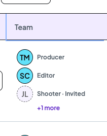
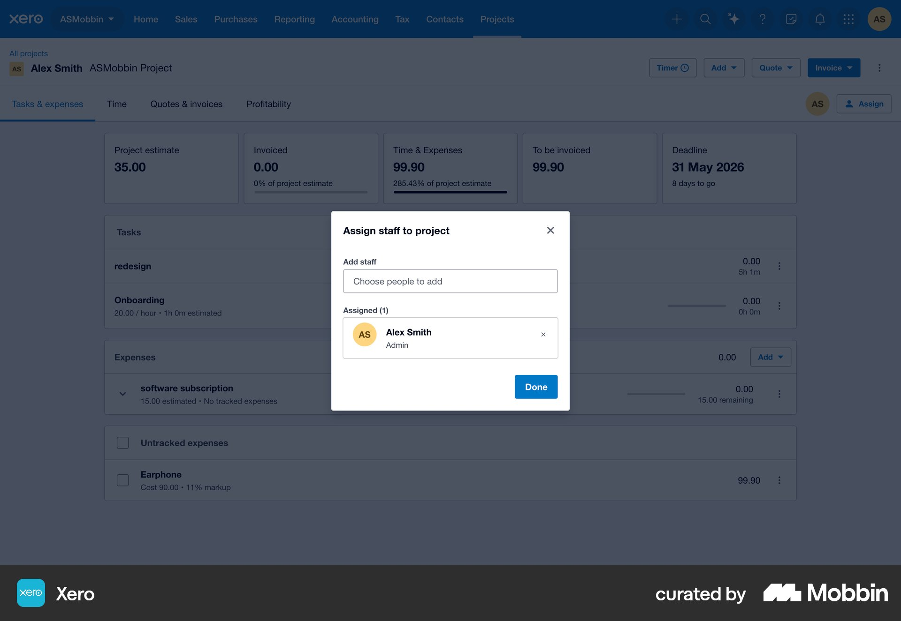
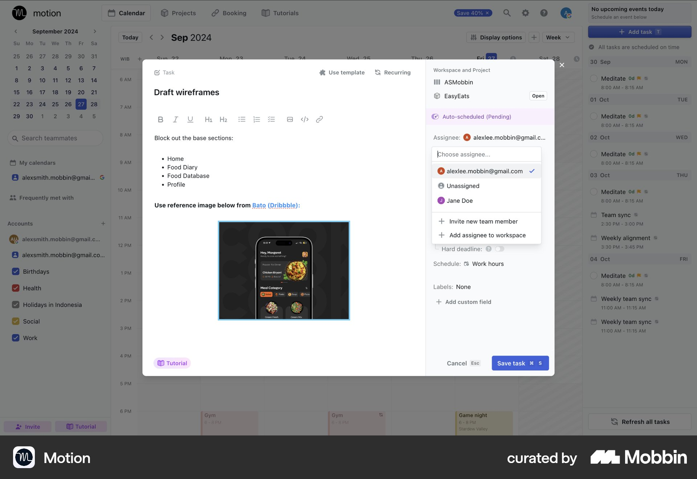
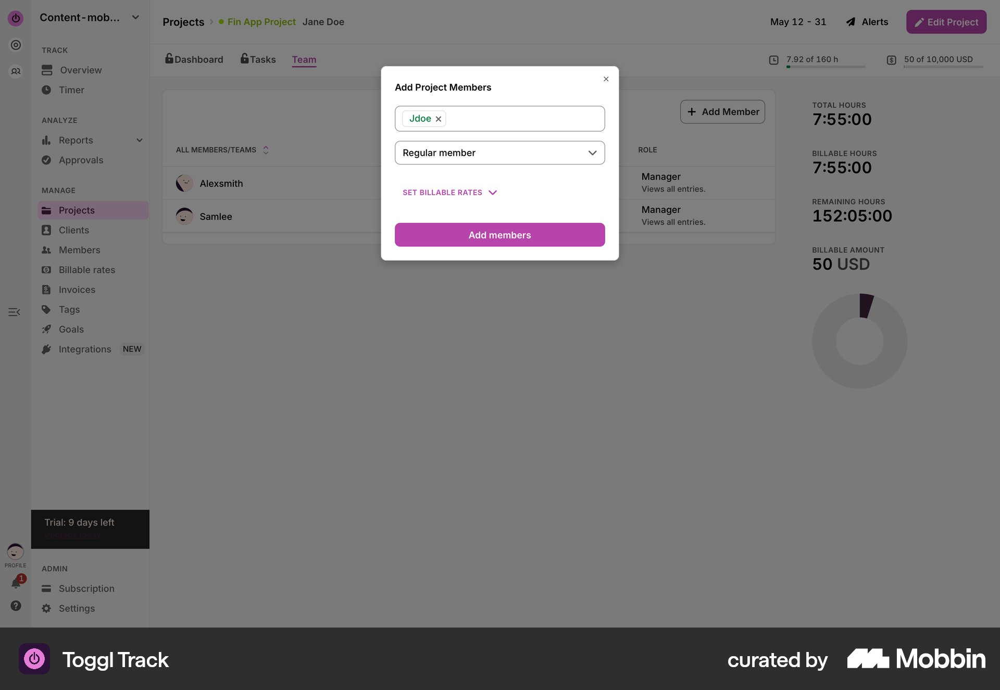
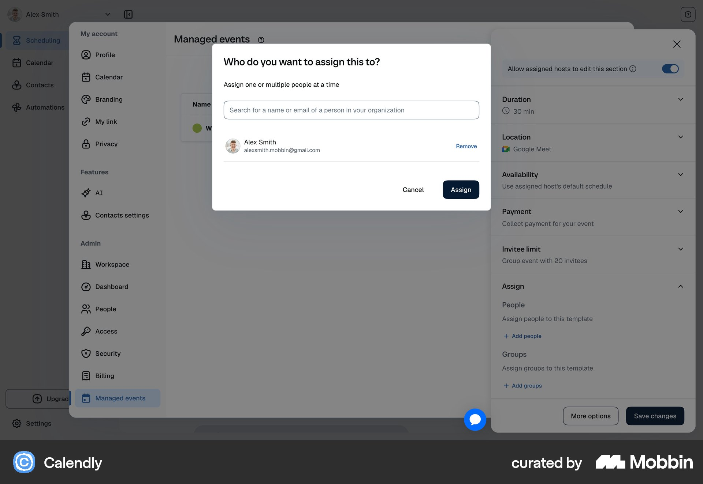

Implemented - review the current resultOpen the implemented Team result and checks. Tom approved the expanded design; the actual application now includes the refined Team panel and direct Videos assignment. Awaiting visual sign-off.
The earlier proposal and comparison below are retained as historical context.
Visual proposal for TomOpen the interactive Team design preview - Videos entry, refined Team panel and assignment with required hours and project cost. Proposal only; no Team implementation or working-data changes.
Original Team proposal · Desktop auditReassessment · no implementation approved
Keep the role editor. Put choosing a person first.
The editor refinements alone do not cover the full assignment task. The latest requirement is a visible, direct assignment entry on Videos, with detailed Team management available separately.
Latest visual feedback: preserve the Team summary; refine its panel

Tom likes this view and its function. Preserve the summary, invitation treatment and +more behaviour. The Team overview needs an explicit layout refinement. It is distinct from the assignment chooser.
The Team overview needs an explicit layout refinement. It is distinct from the assignment chooser.Proposed: a compact aligned people list with avatars, person identity primary, role secondary, consistent hours/status placement and clear role-specific Assign/Change controls. Keep People profile links separate and invitation details available.
Preserve the first summary’s current click-through. Direct Videos assignment remains an additional discoverable path, with required hours and Freelancer cost in the chooser. No application changes are approved by this feedback.
Recorded visual preference and panel scope. Screenshots above were supplied by Tom and retained unedited.
Latest requirement: assign directly from Videos, with required hours
The previous proposal improved the editor but did not fully address the frequent-task entry path. Tom requires assignment to be easy to find and quick to complete from the Videos page.
Revised proposal: an always-visible Assign team action in each project’s leading identity area, opening a compact assignment chooser directly. No required project-details navigation, Team expansion, hidden column or hover/overflow action. Person options appear immediately; search is optional.
Target:3 clicks when the role is already known: open chooser, choose person, Assign.4 when the role must also be chosen. These targets apply when the role and prefilled required hours are already correct. Editing hours is a necessary extra interaction. They are not verified implementation or a promise to bypass Freelancer terms or pending-invitation safeguards.
Required hours is essential: prefill existing role hours for review/edit and show how those hours inform the Freelancer cost. Calculated estimates respond to hours; existing custom/agreed project rates remain clearly identified and preserved.
Existing assignee/role controls can open the same chooser with that role already known. Keep required hours visible and editable in the quick chooser, alongside the role. Show the Freelancer hourly rate and calculated project cost before Assign or Invite. Retain full Team management for invitation history, withdrawal and broader settings. Preserve distinct selection, assignment and invitation actions.
New entry control and chooser composition require agreement. No application changes made. Recorded requirement and scope.
What the inspected references support
Xero separates adding staff from the existing Assigned list. Calendly combines person search with selected people and an explicit Assign action. Motion keeps new-team-member invitation separate within its assignee picker. Toggl Track puts member selection before its collapsed rate section.
These are useful structures. They do not establish one best design or measured usability outcomes. Brisk needs capacity, role hours, Freelancer project rates and pending invitations at the decision point; none of the inspected examples covers that full combination.
Actual references inspected
Xero

Open Xero on Mobbin · Downloaded high-resolution reference, not Brisk UI.Observed: A focused Assign staff to project dialog separates Add staff from an Assigned list.
Useful for Brisk: Separate choosing someone from reviewing existing assignments.
This screen does not show production-role capacity, Freelancer project fees or pending invitations. Its Done label does not establish Brisk save semantics.
Motion

Open Motion on Mobbin · Downloaded high-resolution reference, not Brisk UI.Observed: The task editor has a compact assignee picker with Unassigned, existing people, Invite new team member and Add assignee to workspace entries.
Useful for Brisk: Keep existing-person selection distinct from bringing someone new into the team.
Simple task assignment; it does not show Brisk’s richer rate/capacity decision. It is not evidence to replace the whole role editor with a dropdown.
Toggl Track

Open Toggl Track on Mobbin · Downloaded high-resolution reference, not Brisk UI.Observed: Add Project Members puts member selection and member role first, with a collapsed Set billable rates section above Add members.
Useful for Brisk: Reduce the visual competition between the main selection task and secondary detail.
Billable rates are a different financial concept from Brisk Freelancer project fees. Keep Brisk rates visible when they inform the choice; do not copy the collapse mechanically.
Calendly

Open Calendly on Mobbin · Downloaded high-resolution reference, not Brisk UI.Observed: A focused assignment dialog has a name/email search field, selected people and an explicit Assign button.
Useful for Brisk: Search, a visible choice and an explicit action can sit together in a compact editor.
Managed event assignment, not production staffing. Brisk’s multi-person invitations and single-person direct assignment still need their own rules.
Which overall pattern fits Brisk?
| Pattern | Useful when | Brisk trade-off |
|---|
| Compact assignee picker | The decision is choosing an existing person for a task. | Insufficient room for capacity, multiple invitations and editable project fees without adding more layers. |
| Focused role editor | The person decision includes hours, rates and current invitation state. | Keep the people chooser central so secondary management does not dominate. Recommended for this pass. |
| Full staffing/capacity screen | Comparing many projects and people over time is the task. | A larger product feature than filling one project role. The inspected availability examples do not justify adding it here. |
Revised direction for agreement
TR01
Keep a focused role editor. Make role hours compact, then show Staff/Freelancers and the person-selection area before the full invitation-management list.
Reference-informed composition judgement; current Brisk invitations occupy substantial space before the people chooser.
Trade-off: Existing invitation count and status summary must remain visible, because assignment can affect outstanding invitations.
TR02
Provide search within the person chooser. Keep useful suggestions, but fall back to the full current-role group when the suggested set is empty, with a visible All Staff or All Freelancers scope label.
Search is directly visible in the inspected Calendly reference. Empty-shortlist fallback is a Brisk product judgement, replacing TP03’s copy-only repair if approved.
Trade-off: This changes initial filtering. Preserve disabled people/reasons, selections and a visible selected count when search hides selected people. Search wording and the fallback require explicit agreement.
TR03
Show existing invitations as a compact, separate section with a count and status summary. Expand it to inspect existing details and withdrawal controls.
Reference-informed separation of current state from new selection; this exact invitation disclosure is a Brisk judgement.
Trade-off: Adds a step to inspect full invitation details. Preserve the warning/confirmation boundaries when assignment affects active invitations; do not hide the existence of pending invitations.
TR04
Retain the original DS Checkbox repair and visible Project rate heading. Keep Staff capacity, Freelancer rates, independent inputs, deselection, multi-selection and separate Assign / Assign now / Invite meanings.
Brisk’s approved component standard and current workflow requirements remain authoritative.
Trade-off: The richer rows need more space than a simple task dropdown; that space supports the staffing decision.
Structure proposal only
This is a schematic for discussion, not a screenshot, implemented change or approved new DS component.
Shooter Required hours:8 · editableStaff / Freelancers
Search people
Person + capacity or hourly reference Project rate, for Freelancers
Named DS selection controls
Suggestions where useful; All Staff when there are no suggestions
Existing selection-dependent Assign / Assign now / Invite actions
Existing invitations(2) · compact status summary · expand details
Existing role-management and Cancel controls
Keep pending invitations evident before assignment, and preserve any existing warning that assignment affects them. The illustration omits detailed states and does not approve moving or combining commit boundaries.
What changes from the original recommendation?
TP01 stays: approved named Checkbox, larger target, proper focus and independent inputs. TP02 stays: visible Project rate heading. TP03 is the smaller alternative: one line explaining an empty shortlist.
The revised direction changes default filtering, adds search and reorganises invitation details. Those are additional product/UI decisions requiring agreement. No implementation is authorised by this comparison.
For Freelancers, keep rates visible while choosing. Toggl’s collapsed billable-rate section is a useful example of reducing competing detail, but Brisk’s project fee affects the invitation decision. Copying its collapse would hide useful information.
Evidence and preservation
Web screens and flows were searched through Mobbin. References above were visually inspected, downloaded from the returned high-resolution image URLs and retained locally with original Mobbin links. Assignee-filter, access-administration and calendar-availability results were not treated as direct staffing references.
Brisk’s current1440/1133 screenshots, source review and role boundaries from the original Team proposal remain the local baseline. This comparison did not reopen or operate your working app. No application files, records, dependencies, assets or settings changed.
Reference observations and revised direction · Search-result metadata · Original proposal and current source hashes
Recommended next step
Agree the Videos entry and quick-assignment flow first, then refine the supporting Team editor. Keep Brisk’s DS styling, visible capacity/rates and existing assign/invite meanings.
Needs decision. The original small repair pass remains available if Tom prefers to keep the current layout.